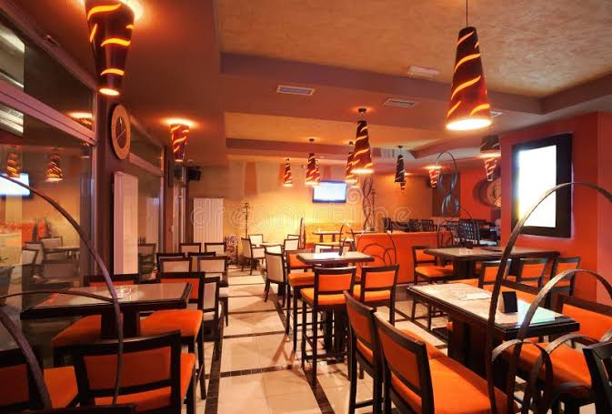
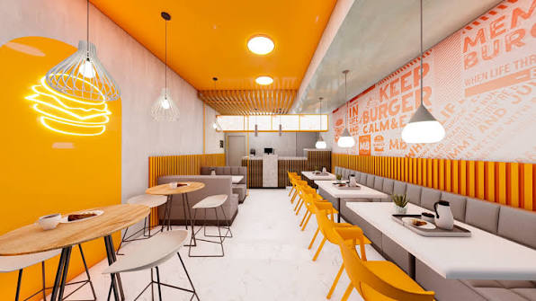
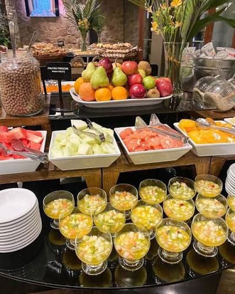
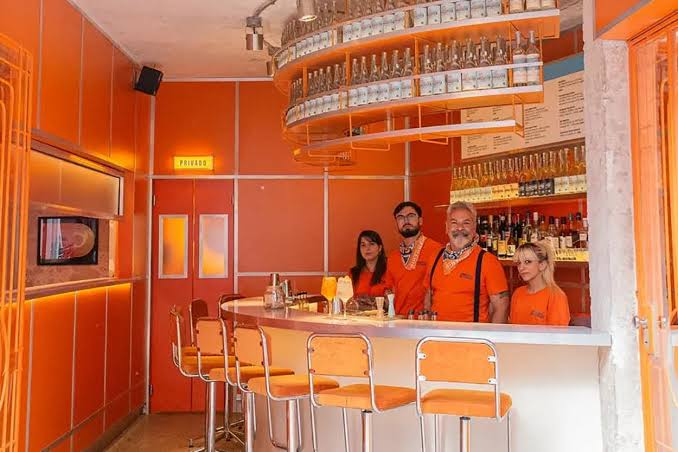
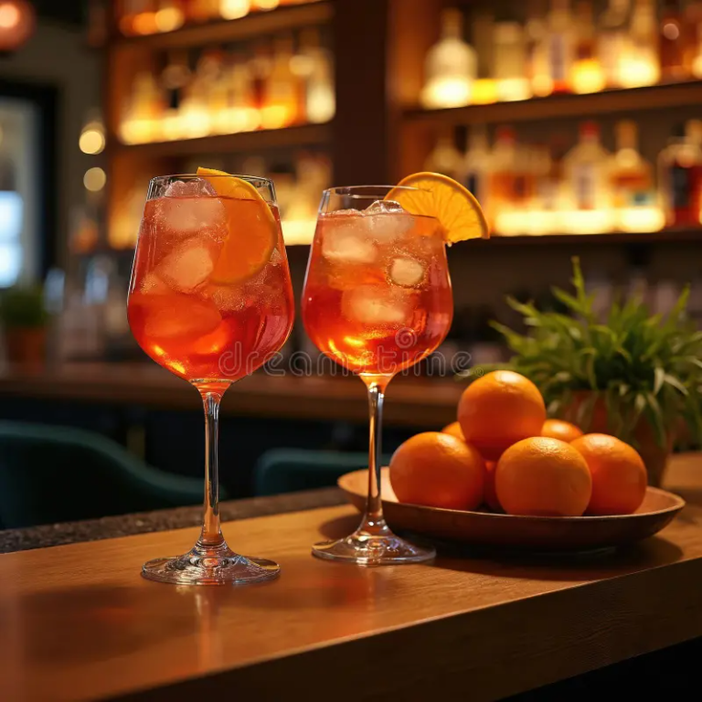
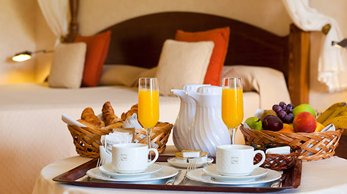

Restaurante
Un espacio para compartir comidas y descubrir sabores regionales en un entorno natural.
Sabores para disfrutar
Disfrutá de una experiencia gastronómica durante tu estadía, con desayuno, restaurante y servicio a la habitación.

Un espacio para compartir comidas y descubrir sabores regionales en un entorno natural.

Un ambiente cómodo para hacer una pausa y disfrutar algo rico durante el día.

Empezá el día con el servicio de desayuno incluido en la propuesta del hotel.

Consultanos por las opciones disponibles durante tu visita y encontrá un momento para relajarte.

Disfrutá de una bebida y un momento tranquilo en el bar del hotel.

Disfrutá de tu desayuno con la comodidad de recibirlo en la habitación.
Para consultar menú, horarios y disponibilidad, contactanos.